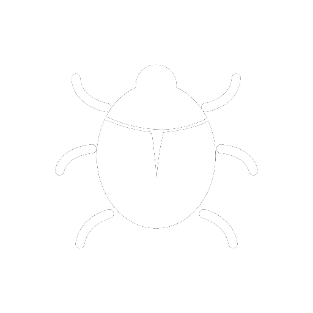

<div
  class="p-fluid p-grid p-sm-8 p-sm-offset-2 p-lg-6 p-lg-offset-3"
  *ngIf="project && !isLoading"
>
  <app-header [project]="project"></app-header>
  <div
    class="p-col-12 p-d-flex p-jc-center p-my-4"
    *ngIf="project.status === 'inprogress'; else elseBlock"
  >
    <p-button styleClass="p-px-6" (click)="showCreateBugModal()">
      <ng-template pTemplate="content">
        
        <span class="p-ml-2 p-text-bold" style="text-transform: uppercase"
          >Add bug</span
        >
      </ng-template>
    </p-button>
  </div>
  <ng-template #elseBlock
    ><h2 class="p-col-12 p-text-center" style="color: #c63737">
      The project is done
    </h2></ng-template
  >
</div>
<h3 class="p-col-12 p-text-center" *ngIf="!bugs && !isLoading">
  There are currently no bugs in the project. You can add it.
</h3>
<app-bugs
  *ngIf="bugs && !isLoading"
  [bugs]="bugs"
  [users]="users"
  (updateBugs)="updateBugs()"
></app-bugs>
<p-progressSpinner
  class="p-grid p-col-12 p-text-center p-mt-6"
  styleClass="bt-spinner"
  strokeWidth="4"
  animationDuration="1s"
  *ngIf="isLoading"
></p-progressSpinner>
